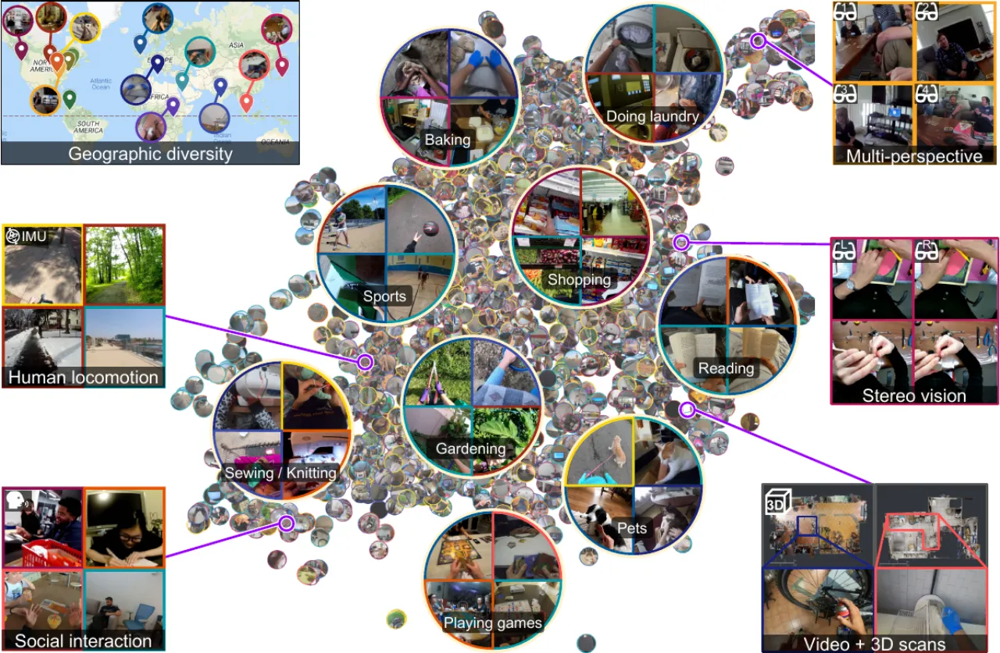
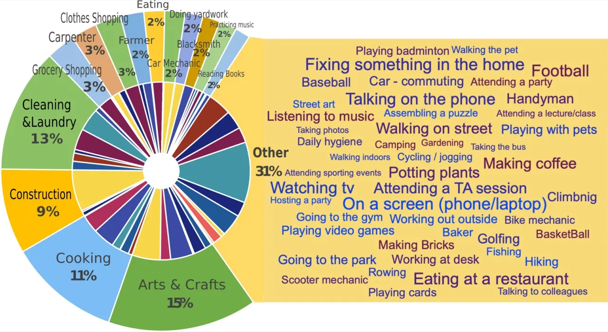
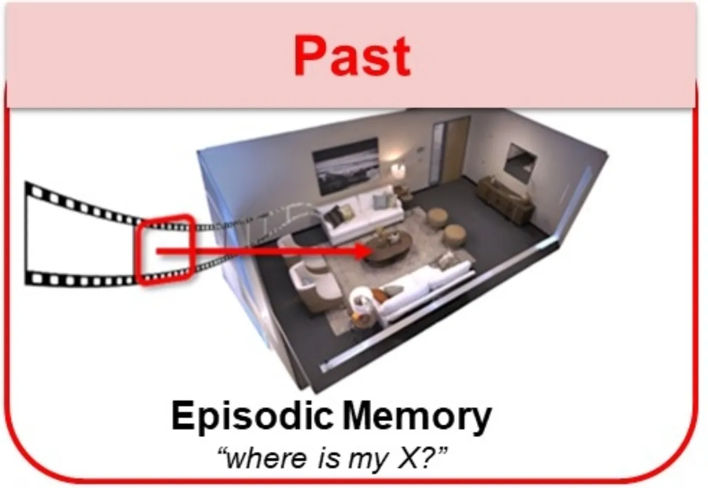
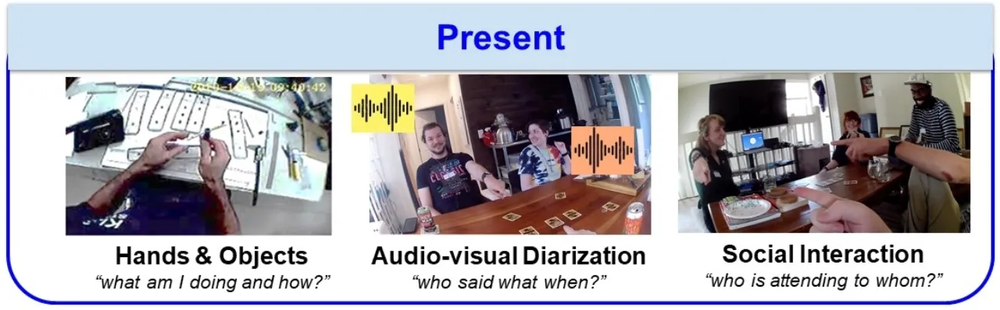
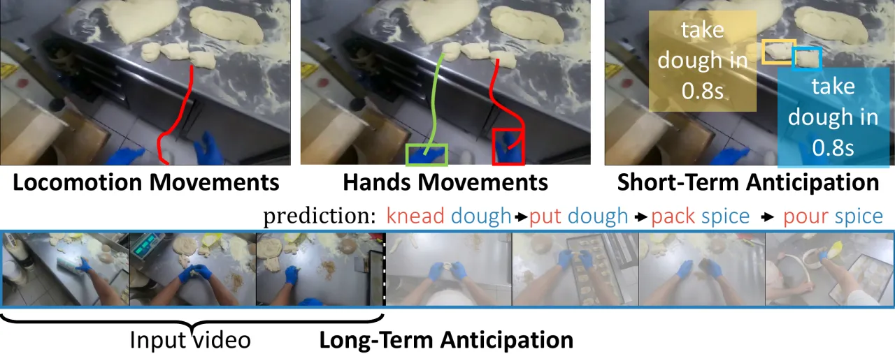
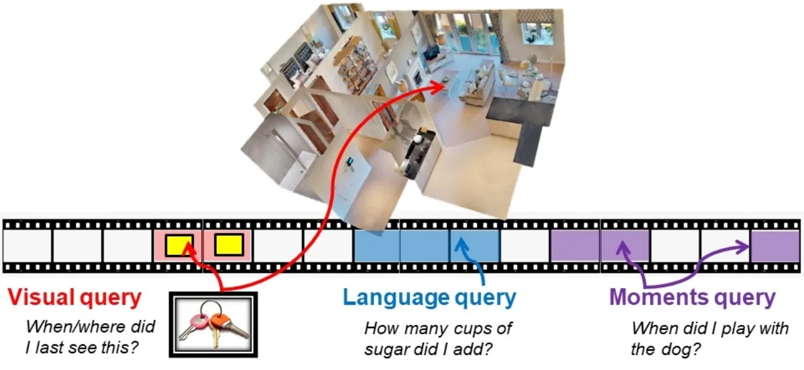
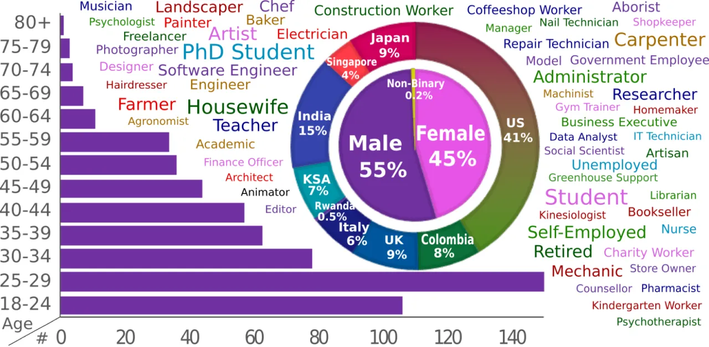

Ego4D 收录 3,670 小时日常生活第一视角视频，横跨家务、户外、职场、休闲等数百种场景，是此前最大 egocentric 数据集的 20 倍以上。配套提供五大基准任务（情景记忆、手-物交互、音视频说话人分析、社交互动、行为预测），旨在催生增强现实与机器人感知领域的新一轮研究浪潮。
当前计算机视觉系统高度依赖「第三人称」互联网图像数据集，善于识别孤立的短片段对象与动作。然而，增强现实（AR）与机器人技术中的核心输入是第一视角（egocentric）的长流式视频——摄像头戴在人身上，实时记录日常互动、物体操作与社交行为。现有数据集在规模、多样性与真实性上均无法满足这一需求。
"Today's influential Internet datasets capture brief, isolated moments in time from a third-person 'spectator' view. However, in both robotics and augmented reality, the input is a long, fluid video stream from the first-person or 'egocentric' point of view — where we see the world through the eyes of an agent actively engaged with its environment."

Ego4D 名称来源：Ego 代表 egocentric（第一视角），4D 代表三维空间加时间维度。数据集由来自 9 个国家、5 大洲的 14 个机构历时两年联合采集，历经逾 250,000 小时的标注工作，产出数百万条时序、空间与语义标注。

Ego4D 的核心贡献分为两部分：（1）大规模、多样化的第一视角视频数据集；（2）覆盖「过去·现在·未来」三个时间维度的五大基准任务。
采用分布式采集策略：14 个合作团队分布于全球 9 个国家、5 大洲，各自招募志愿者佩戴摄像头持续拍摄 1–10 小时。绝大多数视频为非脚本、自然状态下的日常活动，拍摄者涵盖不同职业（面包师、木匠、园丁、机械师等）、年龄段（96 人超过 50 岁）与性别（45% 为女性）。平均每段原始视频约 8 分钟，远长于第三人称视频研究中常见的 10 秒片段。
采集设备使用七种不同头戴摄像头（GoPro、Vuzix Blade、Pupil Labs、ZShades、ORDRO EP6、iVue Rincon 1080、Weeview），避免模型过度拟合单一设备。除 RGB 视频外，数据还包含多种模态：
| 模态 | 时长（小时） |
|---|---|
| RGB video | 3,670 |
| Text narrations（文本叙述） | 3,670 |
| Audio（音频） | 2,535 |
| IMU（惯性测量） | 836 |
| Faces（人脸，已授权） | 612 |
| 3D scans（Matterport3D 扫描） | 491 |
| Multi-cam（多视角同步） | 224 |
| Stereo（立体视频） | 80 |
| Gaze（眼动追踪） | 45 |
所有视频在进入基准标注前，先经过叙事（narration）流程：标注人员每看完 5 分钟视频片段，以密集的时间戳句子描述拍摄者的每个动作。平均密度为 13.2 句/分钟，共产出 3.85M 条叙事句子，覆盖 1,772 个唯一动词与 4,336 个唯一名词。这些叙事既用于后续标注任务的引导，本身也是一项多模态自然语言研究资源。




论文为所有五大基准设计并评测了基线模型，使用 SlowFast（ResNet-101，Kinetics-400 预训练）作为视频特征主干，BERT 作为语言特征编码器。以下为各任务关键基线结果（verbatim from the paper）。
| 基线模型 | R@1, IoU=0.3 (%) | R@5, IoU=0.3 (%) | R@1, IoU=0.5 (%) | R@5, IoU=0.5 (%) |
|---|---|---|---|---|
| 2D-TAN (test) | 5.80 | 13.90 | 2.34 | 5.96 |
| VSLNet (test) | 5.47 | 11.21 | 2.80 | 6.57 |
| 2D-TAN — visual | 2.29 | 6.77 | 1.32 | 3.46 |
| 2D-TAN — text | 3.46 | 10.13 | 1.78 | 4.38 |
消融实验表明，视觉特征与文本特征对 NLQ 任务均有显著贡献（去除任一特征均导致明显性能下降）。
| 子任务 | 基线模型 | 关键指标 |
|---|---|---|
| Short-term object interaction anticipation | Faster RCNN + SlowFast | Top-5 mAP: 1.75% |
| Long-term action anticipation (verbs) | SlowFast + Transformer | ED@20: 0.741 |
| Long-term action anticipation (nouns) | SlowFast + Transformer | ED@20: 0.784 |
Locomotion prediction 基线（AlexNet + KNN）：1 秒预测 1-MTE = 0.73m，5 秒预测 1-MTE = 2.73m。手部运动预测（I3D encoder）：左/右手 Mean Key Frame Displacement Error 分别为 64.28 / 61.18。
| 任务 | 基线模型 | mAP | Top-1 Acc |
|---|---|---|---|
| Looking at Me (LAM) | BiLSTM + ResNet-18 | 0.69 | 0.87 |
| Talking to Me (TTM) | Video + Audio (MFCC + ResNet-18) | 0.54 | 0.58 |

通过对 NLQ 任务的视觉/文本特征消融，论文证明两类特征缺一不可：仅去除视觉特征使 R@1(IoU=0.3) 从 5.80% 降至 2.29%；仅去除文本特征降至 3.46%。这表明 egocentric NLQ 需要真正的多模态理解，而非单靠语言偏见即可解决。
叙事数据分析：13.2 句/分钟的标注密度、1,772 个唯一动词、4,336 个唯一名词，体现了 Ego4D 词汇的丰富性与真实日常活动的多样性。
论文明确指出："74 locations is still a long way from complete coverage of the globe. In addition, the camera wearers are generally located in urban or college town areas."——农村与欠发达地区代表性不足，全球日常生活活动的完整覆盖仍十分困难。
"The COVID-19 pandemic led to ample footage in stay-at-home scenarios such as cooking, cleaning, crafts, etc. and more limited opportunities to collect video at major social public events."——疫情造成社交公共场景数据偏少，采集时间也因设备电池寿命限制而集中在一天中较为活跃的时段。
"Ego4D annotations are done by crowdsourced workers in two sites in Africa. This means that there will be at least subtle ways in which the language-based narrations are biased towards their local word choices."——叙事标注集中于少数标注站点，语言表达存在地域性偏差。
作者明确提供了缓解措施（预计算 SlowFast 特征、按基准子集下载），但 3,670 小时的原始视频对计算资源有限的研究者仍构成较高门槛。各基准标注仅覆盖部分小时数（48–1,000 小时不等），与全量数据之间存在差距（inferred）。
论文专设附录讨论潜在社会影响：可穿戴摄像头在公共场所的普及带来隐私隐患；egocentric 感知技术若被滥用可能用于监控；未来采集工作可能缺乏同等严格的知情同意与去标识化程序。Ego4D 通过许可协议限制数据用途，但无法完全规避风险。